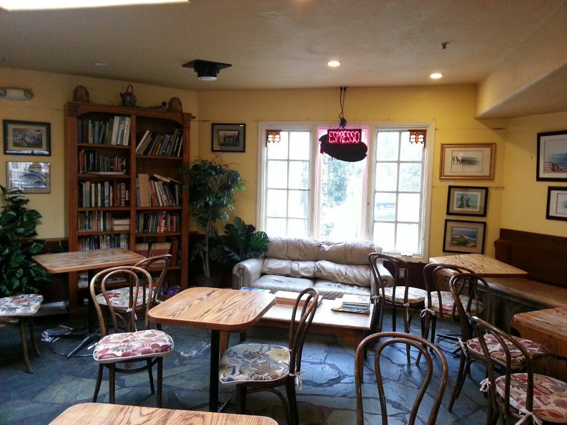

Welcome! I’m a Postdoctoral Fellow at J-PAL South Asia, where I work on research in the economics of education, focusing on teacher effectiveness and the measurement of student learning. My current work draws on longitudinal data from elementary schools in rural India to study how teacher policies and school inputs shape student outcomes. My broader research spans teacher effectiveness beyond test scores, gender- and caste-based gaps in educational outcomes, and the returns to educational credentials, using administrative data from the United States and India.
I hold a Ph.D. in Economics from the University of California, Santa Cruz.
Email: gsachdeva@povertyactionlab.org
You can find my CV here.
Outside of academia, I love playing blues guitar, climbing, and exploring new coffee shops.


Links: